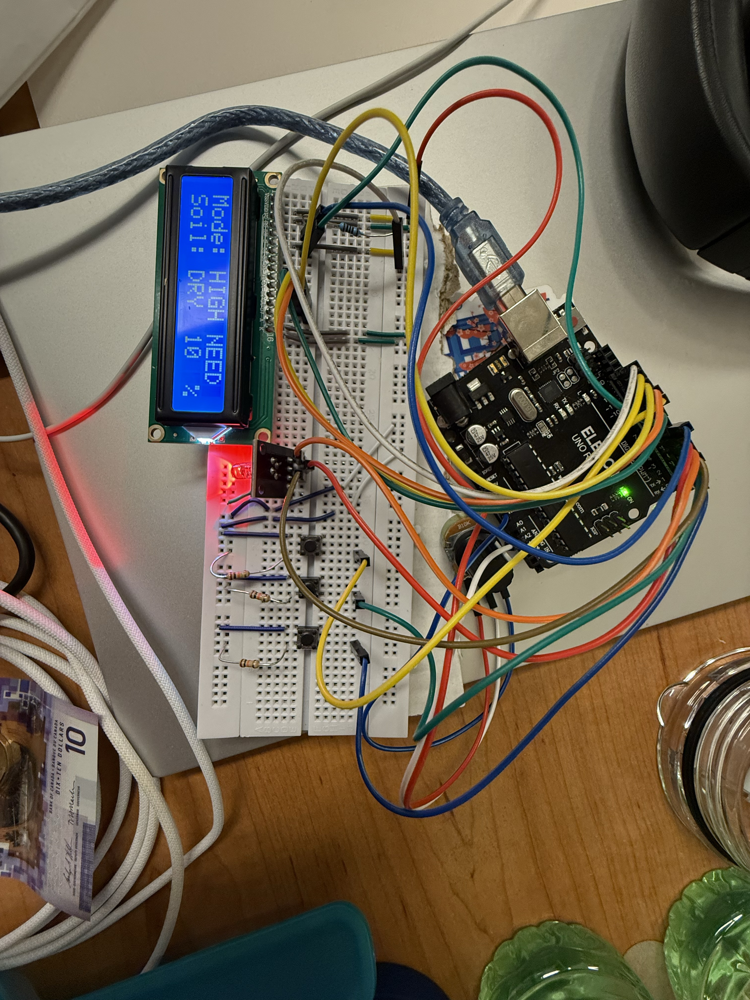
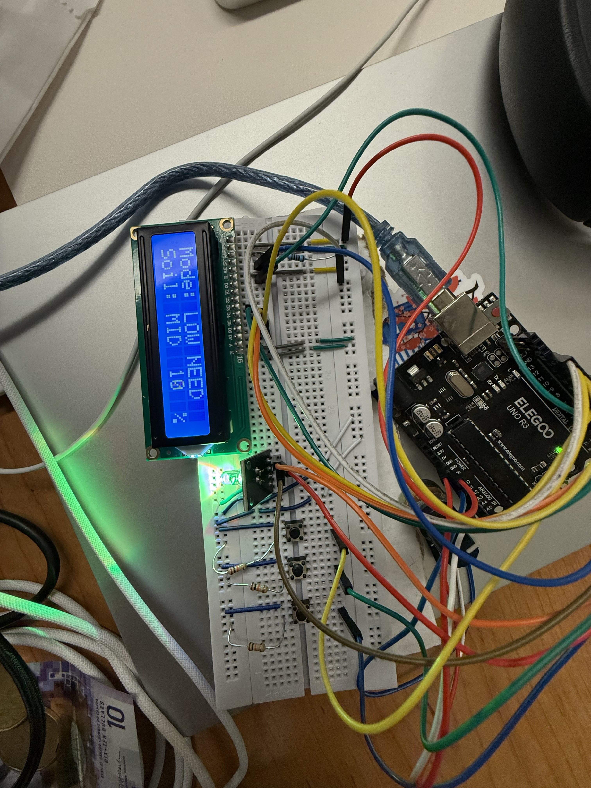
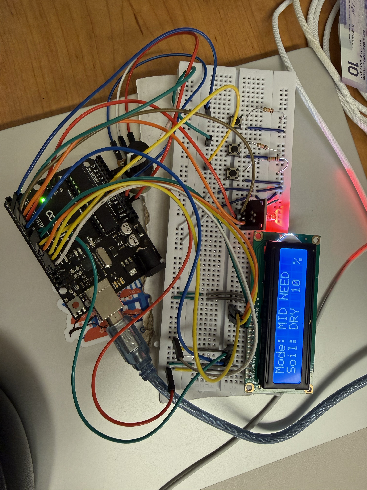

Testing
Participants and Recruitment
A formative usability test was conducted with four target users, all of whom were houseplant owners. Each participant reported owning one or more plants and described typical challenges such as not knowing when or how much to water or fearing that they might overwater. This participant group closely matched the intended target audience for the Calm Plant Watering Alert system.
Representative participants included Zipeng Sun, Meng Bi, and Xize Duan, whose academic backgrounds offered perspectives ranging from advanced research to undergraduate study in computing disciplines.
Consent Form
Participants reviewed and signed the consent form below prior to the usability sessions.
If the embedded viewer does not load, you can download the form directly.
Prototype and Setup
The high-fidelity computer prototype was built on an Arduino UNO with an RGB LED and a 16×2 LCD display. Soil humidity was simulated using a potentiometer, controlled by the examiner to represent dry, medium, or moist soil. Users selected plant types via physical buttons representing hydrophytes, mesophytes, and xerophytes. All sessions were conducted in a quiet room under consistent lighting, with a clear 5-meter line of sight used to test visibility and feedback recognition.
Tasks
Participants were asked to perform the seven benchmark tasks defined in the evaluation plan:
Set up the device on a potted plant.
Select the appropriate mode for the plant type.
Determine the plant’s current water needs.
Decide whether to water the plant.
Water the plant (simulated).
Observe the new plant status.
Decide whether to continue watering or stop.
Measures
The evaluation collected both quantitative and qualitative data, including task completion, error frequency, time on task, recognition speed from five meters, and Likert ratings of task ease (1 = not at all, 5 = very easily).
Detailed Task Logs
Annotated observation sheets below capture the per-task outcomes that were recorded at the end of each session for three representative participants.
Participant 1 - Zipeng Sun

Participant 2 - Meng Bi

Participant 3 - Xize Duan

Results Summary
All participants completed all seven tasks successfully. The average setup time was under 10 seconds, confirming that installation was easy and intuitive. The most challenging step was selecting the correct plant type, where users often hesitated due to uncertainty about how to confirm their choice. Median task times and observations are summarized below:
| Task | Completion | Median Time | Error Rate | Key Observation |
|---|---|---|---|---|
| Setup | 4/4 | ~8 s | 0% | Quick and intuitive; one participant initially inserted the probe incorrectly but corrected immediately. |
| Select plant type | 4/4 | ~120 s | ~50% | Confusion about confirmation and mode meaning; main friction point. |
| Water needs of plant | 4/4 | ~10 s | Low | One user hesitated about whether the display implied immediate watering. |
| Decide to water plant | 4/4 | ~10 s | 0% | Clear link between LED color and decision. |
| Water based on needs (simulated) | 4/4 | ~10 s | 0% | Smooth action–feedback loop. |
| Determine new state | 4/4 | ~10 s | 0% | LED and LCD messages easily understood. |
| Decide to stop water or not | 4/4 | ~10 s | Low | One participant continued watering until the light changed, suggesting unclear stop cues. |
From a distance of five meters, all users were able to identify the LED color correctly within five seconds. Median satisfaction scores ranged from 4 to 5 (“Yes” to “Very easily”) for most tasks, except task 2 (“Somewhat”) due to mode-selection ambiguity.
Key Findings
The usability goals of the system were largely met:
-
At-a-glance status was achieved. Participants consistently recognized LED feedback within five seconds at five meters.
-
Timely feedback after watering was partially validated. Although the LED and LCD updated immediately, the real post-watering delay could not be confirmed because the humidity was simulated.
-
Easy installation was fully achieved, with all users completing setup in seconds.
The main usability issue identified was unclear confirmation when selecting the plant type, which caused the majority of errors and hesitation.
Representative Comments
“Red, green, yellow is easy to understand.”
-
“I wasn’t sure if I had to press to select or if it selected automatically.”
-
“The word healthy made me think of sunlight or disease, not water.”
“I would water until the light goes away.”
Design Implications
The test results directly informed several important design changes.
-
Mode selection clarity: Replace the joystick with three dedicated buttons, each with a label (“High,” “Medium,” “Low”) and a confirmation blink.
-
Terminology: Replace “Healthy” with clear terms such as “Soil humidity,” “Dry,” “Mid,” and “Moist.”
-
Stopping rule: Add an explicit stop message on the LCD (“Enough water”) and a short note (“Recheck in 15 minutes”) once a real sensor is implemented.
-
Future validation: In the next version, test with a real soil-moisture sensor to confirm feedback timing and threshold calibration.
Limitations
The prototype used a simulated humidity control, meaning that real soil absorption and over-watering detection were not evaluated. The sample size (n = 4) was sufficient for formative feedback but should be expanded in future testing to include a broader range of plant owners with varying experience levels.
Completion and Alignment
All seven benchmark tasks were completed by real target users, and the recorded results (times, errors, notes, and user comments) were analyzed. The findings led directly to concrete design evolution—specifically the shift from joystick to buttons, improved wording, and simplified on-screen messages.
Results and Analysis
Overview
Four target users, all houseplant owners, completed the seven benchmark usability tasks using the Arduino prototype. Each session lasted approximately 10–15 minutes and was observed by one examiner. All participants were able to interact with the prototype independently after brief instructions. No sessions were abandoned or failed, although several users showed confusion during the plant-type selection process.
| Task | Completion Rate | Median Time (s) | Error Frequency | Key Observation |
|---|---|---|---|---|
| 1.Setup device | 100% | 8 | 0 | Straightforward setup; one user initially inserted the probe incorrectly but corrected quickly. |
| 2.Select plant type | 100% | 120 | High (2–3 errors) | Confusion about confirmation and mode meaning; unclear joystick/button mapping. |
| 3. Determine water needs | 100% | 10 | Low | One hesitation when interpreting color feedback. |
| 4. Decide to water | 100% | 10 | 0 | Clear understanding of the link between LED color and action. |
| 5.Simulate watering | 100% | 10 | 0 | Immediate LED feedback; no hesitation. |
| 6. Check new state | 100% | 10 | 0 | Recognition within five seconds at a five-meter distance. |
| 7. Decide if more water is needed | 100% | 10 | Low | One participant watered until the light changed, indicating unclear stopping criteria. |
All participants successfully completed every task.
Errors were concentrated in Task 2, due to ambiguous terminology (“Healthy” vs. “Moist”) and unclear confirmation feedback.
LED color recognition was accurate for all users within five seconds at a distance of five meters, fulfilling the visibility requirement.
Average satisfaction across all tasks was 4.3 / 5 on the Likert scale, with the exception of Task 2, which averaged around 3 (“Somewhat”) due to navigation uncertainty.
Qualitative Observations and User Comments
Visual Observations:



Positive feedback
“Red, green, yellow is easy to understand.”
“Very simple—anyone could use it.”
-
“It’s fun; my family would be more interested in watering plants.”
Confusion points
-
“I don’t know if I have to press to select or if it selects automatically.”
-
“The word ‘Healthy’ made me think about sunlight or disease, not water.”
“Should I give more water often, or just once?”
Behavioral notes
Participants primarily relied on LED color rather than LCD text for interpretation. Most instinctively rotated the potentiometer to observe color transitions before making a decision, showing engagement and curiosity. Two users verbalized uncertainty when switching modes, emphasizing the need for a clearer selection confirmation.
System Usability Evaluation
The prototype achieved nearly all of its usability objectives:
-
Installation was quick and straightforward.
-
Feedback interpretation through LED color mapping was intuitive and effective.
-
Recognition distance was verified participants consistently identified feedback within five seconds at five meters.
-
Post-watering feedback functioned well in simulation, though it could not be fully validated without a real soil-moisture sensor.
No major usability failures occurred. The main weakness remained the plant-type selection interaction, where confusion and hesitation persisted.
Prioritized Usability Issues
| Priority | Issue | Impact | Recommendation |
|---|---|---|---|
| High | Confusing mode selection (confirmation unclear) | Causes hesitation and increased task time | Replace joystick with three dedicated buttons (implemented) and add visual confirmation LED above the active plant type. |
| Medium | Ambiguous wording (“Healthy”) | Leads to misinterpretation of feedback | Use direct soil-related terms: “Dry,” “Mid,” and “Moist.” |
| Medium | Misinterpretation of stop cue (“light goes away”) | May cause unnecessary watering | Add LCD message “Enough water” when soil becomes moist. |
| Low | Wordy or repetitive LCD text | Minor distraction | Simplify messages to two words or fewer (e.g., “DRY,” “MOIST”). |
Summary
All benchmark tasks were successfully completed, and the system met its primary usability goals. Quantitative metrics—completion times, error rates, and recognition speed—along with qualitative insights from user comments and observations, confirm that the prototype is intuitive and easy to use. The only significant problem identified was the unclear mode-selection interaction, which has already been addressed in the updated design.
Overall, the system demonstrates strong usability with only minor refinements needed in feedback clarity and terminology.
Test Plan Critique
The test plan provided by the design team was well structured and generally aligned with the key usability goals of the Calm Plant Watering Alert system—namely easy installation, clear at-a-glance feedback, and timely post-watering response. The seven benchmark tasks (setting up the device, selecting the plant type, reading soil status, deciding and performing watering, rechecking the state, and deciding to stop) covered all major user interactions and offered a coherent framework for usability testing. The plan appropriately emphasized task completion, error count, time to recognition, and subjective ease ratings, which directly matched the system’s intended metrics.
However, several refinements were introduced to strengthen the plan’s completeness and data quality:
-
Alignment with clarity heuristics
In reference to Nielsen’s Heuristic #1 (Visibility of System Status) and #2 (Match Between System and the Real World), the original plan did not directly test whether LED color feedback and wording such as “Healthy” or “Moist” were intuitively understood by novice users. We therefore added short observation prompts asking participants to explain how they interpreted each signal. This yielded more detailed insights into terminology confusion and recognition accuracy.
-
Improving measurement validity
The initial plan emphasized task completion time but omitted recognition speed from a distance, which is crucial to verifying the “at-a-glance feedback” goal. We added a 5-meter visibility test to measure how quickly participants could identify color feedback. This change tied the quantitative measure more closely to the design objective.
-
Enhancing the cognitive walkthrough
The plan originally listed tasks without fully specifying user assumptions or interface expectations. We refined these by clarifying that users were assumed to know their plant type but not the underlying sensing technology, and by checking whether interface cues (e.g., button layout, LED labeling) adequately supported those assumptions. This made the walkthrough observations more diagnostic and meaningful.
-
Adding qualitative reflection
Beyond the Likert-scale ratings, we included a brief open-ended question (“What did you think the system was telling you?”) at the end of each task. This addition helped connect the quantitative results with qualitative insights about users’ confidence and understanding of system feedback.
-
Assessing overall completeness
The original plan was largely sound and implementable. It effectively covered installation and feedback interpretation but paid less attention to post-watering confirmation, a limitation inherent to using a simulated humidity sensor. Our revisions addressed this gap and created a stronger alignment between usability goals, evaluation measures, and observed outcomes.
Summary
In summary, the original test plan was methodologically solid and closely matched the design team’s usability objectives. The evaluating team enhanced it by incorporating visibility-distance measures, feedback-interpretation probes, and more detailed cognitive walkthrough steps. These refinements produced richer, goal-oriented data and strengthened adherence to established usability heuristics, ensuring that the evaluation accurately reflected how well the system supports its intended users.
Design Critique
Based on the usability testing results and observations, the evaluating team identified several areas for improvement that would make the Calm Plant Watering Alert more effective and accessible for its intended users, especially beginner and casual plant owners who value clarity and simplicity over technical complexity. Each recommendation directly addresses issues found during evaluation and reinforces the system’s core usability goals: easy installation, clear feedback, and timely, confidence-building interaction.
1. Simplify Mode Selection (High Priority)
Observation:
Several participants hesitated or made errors when selecting the plant type because the joystick interface was unclear. Users were unsure whether to press, move, or confirm.
Recommendation:
Replace the joystick with three clearly labeled physical buttons, each corresponding to one plant type (high, medium, or low water needs). Add a small indicator light or icon above the selected option and a short confirmation blink when a mode is chosen.
Rationale:
This change makes the action–feedback relationship explicit and follows Nielsen’s Heuristic 1 (Visibility of System Status) and Heuristic 4 (Consistency and Standards). This modification has already been implemented in the computer prototype and noticeably improved ease of use for new users.
2. Clarify Feedback Wording (Medium Priority)
Observation:
Some users misunderstood the word “Healthy,” interpreting it as sunlight or disease rather than soil moisture.
Recommendation:
Use direct, unambiguous terms such as “Dry,” “Moderate,” and “Moist.” Support color feedback with short text on the LCD screen, for example “Soil: Dry 25%.”
Rationale:
This adjustment aligns the interface vocabulary with users’ real-world understanding, following Nielsen’s Heuristic 2 (Match Between System and the Real World). It reduces confusion and makes the system more intuitive for beginners.
3. Add Explicit Stop or Confirmation Message (Medium Priority)
Observation:
One participant continued watering until the light went off, unsure when to stop.
Recommendation:
When the indicator turns green, display a clear message such as “Enough Water” or “Stop Watering.” Optionally, show a reminder message like “Recheck in 15 minutes.”
Rationale:
This addition provides closure and builds user confidence, following Nielsen’s Heuristic 9 (Help Users Recognize, Diagnose, and Recover from Errors). It ensures users understand when the desired state has been reached.
4. Simplify On-screen Text (Low Priority)
Observation:
Some participants found the LCD text too long or repetitive, which slightly reduced clarity.
Recommendation:
Keep messages concise, ideally one or two words such as “Dry” or “Moist.” Use LED color as the main feedback channel and reserve text as a secondary confirmation.
Rationale:
Shorter text supports quick understanding and keeps interaction calm and unobtrusive, which fits the design’s goal of delivering feedback at a glance.
5. Prepare for Real Sensor Integration (Future Improvement)
Observation:
The current prototype uses a potentiometer to simulate humidity, so post-watering feedback cannot fully represent real soil behavior.
Recommendation:
Integrate an actual soil-moisture sensor in future versions and conduct another validation round to confirm whether the “within one minute feedback” goal can be achieved.
Rationale:
This will increase realism and allow more accurate feedback, helping the product move from simulation to a fully functional prototype.
Summary
The proposed design improvements—simplified plant-type selection, clearer wording, explicit confirmation cues, shorter text, and sensor integration—directly address the usability issues identified in testing. Together, these refinements make the Calm Plant Watering Alert more intuitive, transparent, and reassuring for its intended users, helping casual plant owners feel more confident and engaged in everyday use.